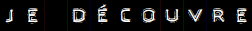
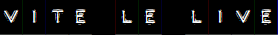
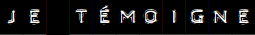
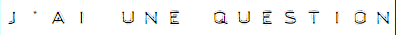
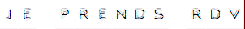
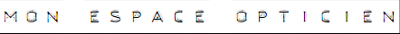

Pour lire ce mail dans votre navigateur, cliquez ici

|


Le design de la Webster trouve son inspiration dans les années 1980, en combinant une monture métal, habillée de pièces en acétate au niveau du double pont et des branches.


Élégante et discrète à la fois, la goddard est l’archétype de la lunette vintage. Ce qui fait de la monture Goddard un classique intemporel !
 Une nouvelle campagne Vinyl Factory au style 80’s toujours aussi rock !
Toujours en pleine tournée des salles, mais aussi des époques et des styles, Vinyl Factory s’arrête cette saison dans les États-Unis des années 80 !
Inspirée par les pop-stars de cette époque, et leur look très glam-rock, la nouvelle campagne de la marque la plus Rock de l’optique fait le choix de l’extravagance. Baroque, la campagne emprunte aussi bien à la Cindy Lauper de “Girls Just Wanna Have Fun” qu’à la Tina Turner de “We Don’t Need Another Hero”. Un écrin idéal pour mettre en valeur la nouvelle collection Vinyl Factory très inspirée de l’imagerie et du design américain de cette époque 
Guitariste des mythiques Dandy Warhols, Pete Holmström tourne également avec la formation Pete International Airport. Ils sont venus nous rendre visite au showroom pour une session acoustique exclusive
 
Marlène, Les Opticiens Mutualistes ,
"VinylFactory ce sont des modèles constament re-nouvelés,des mélanges originaux de matières differntes."
 |


|

  |
||||

|

|

|

|
|
| To unlist from our mailings, click here | ||||